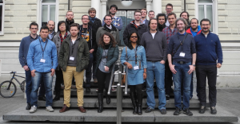

ZEUS Workshop 2017
February 13-14, 2017, Lugano, Switzerland
Program
Monday, February 13, 2017
- 09:00 Registration
- 09:45 Welcome
- 10:00 Session 1 - Process Analysis
Thomas Heinze.
Towards Certified Data Flow Analysis of Business Processes
Matthias Geiger, Philipp Neugebauer, Andreas Vorndaran
Automatic Standard Compliance Assessment of BPMN 2.0 Process Models
Xixi Lu, Dirk Fahland
A Conceptual Framework for Understanding Event Data Quality for Behavior Analysis
- 11:30 Coffee Break
- 12:00 Session 2 - Process Enactment and Modeling Languages
Thilo Schnelle, Daniel Lübke.
Towards the Generation of Test Cases for Executable Business Processes from Classification Trees
Sankalita Mandal.
Events in BPMN: The Racing Events Dilemma
- 13:00 Lunch Break
- 14:00 Session 3 - Stream Processing
Masiar Babazadeh.
Tuning Browser-to-Browser Offloading for Heterogeneous Stream Processing Web Applications
Christoph Hochreiner.
VISP Testbed - A Toolkit for Modeling and Evaluating Resource Provisioning Algorithms for Stream Processing Applications
- 15:00 Coffee Break
- 15:30 Session 4 - IoT
Felix Baumann, Dieter Roller.
Closed-Loop Control of 3D Printers via WebServices
Simon Duque Antón, Daniel Fraunholz, Janis Zemitis, Frederic Pohl, Hans Dieter Schotten.
Highly Scalable and Flexible Model for Effective Aggregation of Context-based Data in Generic IIoT Scenarios
- 16:30 Session 5 - Keynote I
Daniel Lübke.
Why developers don't like BPM and how research can help
- 17:00 Closing
- 18:00 Lugano City Tour
- 19:00 ZEUS 2017 Dinner
Tuesday, February 14, 2017
- 09:30 Session 6 - Keynote II
Florian Daniel.
From Service- to UI-Oriented Computing: The Vision of an Intuitive Composition Paradigm
- 10:30 Coffee Break
- 11:00 Session 7 - Cloud Management
Matteo Nardelli.
Elastic Allocation of Docker Containers in Cloud Environments
Oliver Kopp, Uwe Breitenbücher.
Choreographies are Key for Distributed Cloud Application Provisioning
Philipp Neugebauer, Christian Maier, Alexander Bumann.
Benchmark Proposal for Multi-Tenancy in the Database Layer
- 12:30 Lunch Break
- 13:30 Session 8 - Software Modeling and Analysis
Andreas Fritsch.
Modeling and Analysis of Sustainability in Product Life Cycles?
Leonildo Azevedo, Julio C. Estrella, Claudio F. M. Toledo, Stephan Reiff-Marganiec.
An Analysis of Metaheuristic to SLA Establishment in Cloud Computing?
- 14:30 Session 9 - Tool Demonstrations
Ronny Seiger, Steffen Huber, Peter Heisig.
PROtEUS++: A Self-managed IoT Workflow Engine with Dynamic Service Discovery
Jörg Lenhard, Oliver Kopp.
Tool Support for Systematic Literature Reviews and Mapping Studies - A JabRef Demonstration
- 15:30 Short Break
- 15:45 Closing Session, Best Presentation Award, ZEUS 2018 Announcement

Workshop
Local Organizers
Proceedings